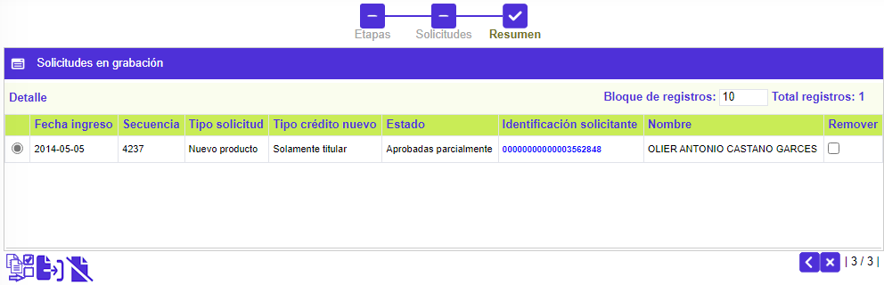

|
Solicitudes por etapa - Realce |
Solicitudes en etapa de Realce: Este formulario corresponde al segundo paso del wizard, al que se accede desde la opción principal Solicitudes por etapa. En él se pueden consultar las diferentes solicitudes de afiliación que se encuentran en cualquiera de las etapas de Realce, Sobreflex de clave, Sobreflex de empaque, Envío mensajería, Acuse de entrega.
A través de la opción Detalle de la parte superior, se puede consultar la solicitud seleccionada. Adicionalmente, se puede consultar el detalle del cliente por medio del vínculo ubicado en la Identificación del solicitante. Por último, cuando se trata de una solicitud de Principal con adicional se mostrará la opción Adicionales en la parte superior, la cual invoca el detalle de este tipo de solicitudes.

|
Fecha ingreso |
Muestra la fecha en la cual se grabó la solicitud. |
|
Secuencia |
Campo de salida que ilustra el número consecutivo asignado por el sistema y que permite diferenciar e identificar las solicitudes. |
|
Tipo solicitud |
Muestra el tipo de solicitud a tramitar en el formulario. |
|
Tipo crédito nuevo |
Campo de salida que identifica qué tipo de cliente o clientes aplican para la solicitud de Crédito nuevo. Puede ser Titular con adicional, Solo titular, o Solo Adicional. |
|
Estado |
Indica la condición en que se encuentra la solicitud al arribar a esta etapa, las cuales pueden ser: En zona gris, Negada totalmente, Negada parcialmente, Aprobada totalmente o Aprobada parcialmente. |
|
Identificación solicitante |
Contiene tanto el tipo de documento como el número del mismo, que identifica al solicitante. |
|
Nombre |
Despliega el nombre del solicitante. |